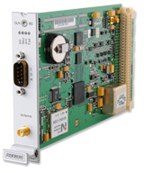

Editregion
Модуль CPU
IMS-CPU. Обеспечивает работу NTP - сетевого протокола синхронизации, а также управление всеми модулями и их настройку через веб интерфейс. Имеет 1 LAN порт и сервисные интерфейсы RS-232 и USB. Подробнее...
Сетевые модули
LNE-GbE-модуль добавляет сетевые интерфейсы к модулю управления CPU, увеличивая число NTP портов. Подробнее...
IMS-HPS. Модуль, обеспечивающий работу протокола точного времени PTP IEEE1588/SyncE/Carrier Grade NTP. Модуль оснащен собственным процессором. Имеет «медный» порт 10/100/1000, слот SFP для оптики и входы/выходы Synchronous Ethernet (ITU-T G.8261, G.8262, G.8264 ESMC) Подробнее...
Модули приемников
IMS-GNS. Основной источник синхронизации для всей системы. Оснащен двухсистемным приемником сигналов спутниковых систем ГЛОНАСС/GPS и высокостабильным генератором. Обеспечивает генерацию базовых сигналов синхронизации. Шасси Метроном-3000 поддерживает резервирование модулей приемников.Подробнее...

IMS-RSC. Модуль используется в резервированных системах, когда установлено два модуля приемника для автоматического (или ручного) переключения между ними при аварии. Подробнее...
IMS-GPS. Модуль, аналогичный IMS-GLN. Оснащен приемником сигналов спутниковых систем только GPS. Подробнее...
Модули внешней синхронизации
IMS-MRI. Модуль служит для синхронизации системы от внешних сигналов: 1PPS, 10МГц, IRIG B (DCLS и AM), AFNOR IEEE1344 или C37.118). Подробнее...
IMS-ESI. Модуль служит для синхронизации от внешних сигналов, таких как 2,048 МГц и 2,048 Мбит. Подробнее...
Модули выходных сигналов
IMS-BPE. Модуль НЕ программируемый. Состоит из соединенных основной и оконечной плат. Оконечная плата может иметь следующие интерфейсы: BNC04 - 4 BNC разъема с сигналами PPS, IRIG DC, 10 МГц, программируемые импульсы, 2048 МГц TTL в любой комбинации и IRIG AM только одном разъеме; FO - 4 оптических разъема ST (850 нм, многомод) с сигналами 2048 МГц, DCF, PPS, PPM, PPH, IRIG DC в любой комбинации; TCD – 4 BNC разъема с сигналами IRIG AM.Подробнее....
IMS-CPE. Модуль программируемый. Аналогично IMS-BPE, состоит из основной и оконечной плат. Назначение портов оконечной платы можно устанавливать через веб интерфейс. Оконечная плата может иметь следующие интерфейсы: PM04 – 4 программируемых импульсных выхода на МОП ключах и 1 выход сигнала IRIG AM или синтезатора частот; BNC04 – PPS, PPM, PPH, DCF, IRIG DC, 10 МГц в любой комбинации, IRIG AM или синтезатор только на одном разъеме; FO - 4 оптических разъема ST (850 нм, многомод) с сигналами 10 МГц, PPS, PPM, PPH, DCF, IRIG DC в любой комбинации; TS2 – 2 RS232 интерфейса (мультиформат); TCD - 4 BNC разъема с сигналами IRIG AM.Подробнее...
IMS-LNO. Модуль генератора сигнала 10 МГц
синусоидальной формы с низким уровнем фазового шума. 4 разъема BNC.Подробнее...
IMS-LIU. Модуль сигналов 2048 МГц и 2048 Мбит/с. 4 разъема 2048 МГц (E1) G.703, 75 Ом, несимметричные или 120 Ом, симметричные.
4 разъема 2048 Мбит/с (E1), 75 Ом, несимметричные или 120 Ом, симметричные. Подробнее...
IMS-FDM. Анализатор - измеритель частоты электросетей 50/60 Гц
Модуль анализатора отклонений частоты электросетей измеряет частоту в исследуемой линии, а также время, опираясь на частоту в линии. Отклонения частоты и времени рассчитываются относительно высокостабильного опорного генератора устройства Метроном-3000, синхронизированного со спутниковыми системами ГЛОНАСС и GPS. Расчетные данные выводятся через интерфейс RS232 или преобразуются в постоянное напряжение при помощи встроенного в модуль ЦАП. Разрешающая способность по частоте 0.0001 Гц, по времени 1 мс. 2 выхода RS232 (FDM), 2 аналоговых выхода -2,5 В…+2,5 В, разрешение 16 бит. Подробнее...
IMS-SCG. Генератор звуковой частоты
Генератор звуковой частоты имеет 4 независимых частотных выхода (уровень TTL на 50 Ом). Диапазон частот 24 Гц…24,576 МГц. Применяется в студиях звукозаписи, теле- и радиовещания.Подробнее...
IMS-VSG. Генератор сигналов видеосинхронизацииГенератор видеосинхроимпульсов имеет 4 выхода, на которых доступны следующие сигналы: 1xвыход двухуровневого синхросигнала (сигнал черного), 1xвыход трехуровневого синхросигнала, 2xвыход синхросигналов H-Sync, V-Sync, ... Управление выходными сигналами осужествляется через веб интерфейс устройства Метроном-3000.Подробнее...
Модули питания
IMS-PWR. Шасси Метроном-3000 имеет 4 места для установки резервированных модулей питания на различное напряжение и род тока в любой комбинации. Доступны модули: 100-240 В постоянного и переменного тока, 20-72 В постоянного тока.Подробнее...

ООО "Прайм Тайм"
127322, Москва, ул. Яблочкова д.21, корп. 3, 3 этаж
Телефон/Факс: +7(495) 616-10-00
127322, Москва, ул. Яблочкова д.21, корп. 3, 3 этаж
Телефон/Факс: +7(495) 616-10-00